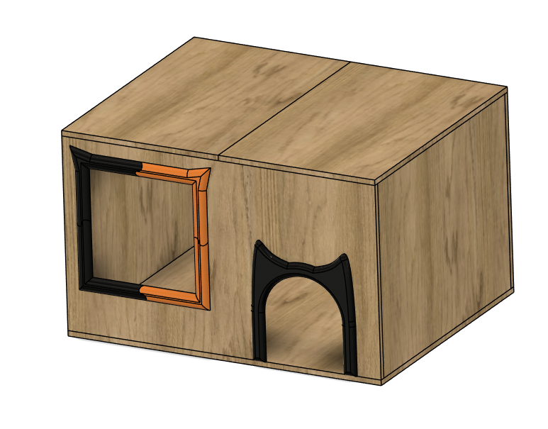
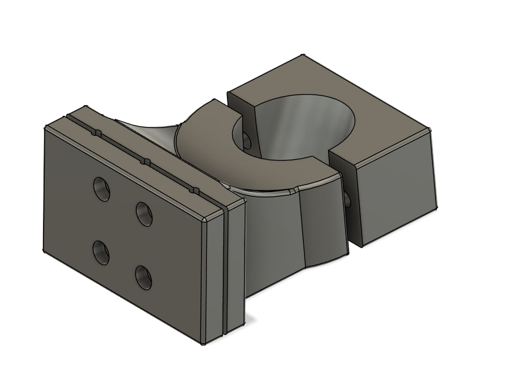
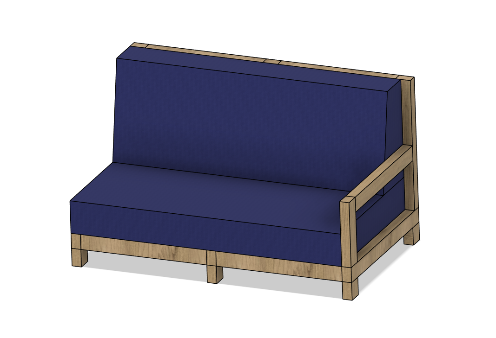

Introduction
Instead of looking at problems in a professional field, I focused on problems around me. These are things I actually want to build anyway, so it makes more sense to explore them through tinkering.
The goal is not to directly solve them, but to turn them into setups where I can experiment, iterate and learn through making.
1. Cat Toilet Furniture

Problem
I don’t really have space for a cat toilet, and the normal ones look bad. So I want to build an enclosed wooden one that fits into the room.
Why this works for tinkering
There is no single correct solution. It depends on space, size, ventilation and design. So it makes sense to experiment with different shapes and constructions.
Target Group
People with small apartments and pets who want functional but also aesthetic solutions.
Scaffolding / Onboarding
Some basic examples of wooden constructions and joints would help to get started. Also simple sketches or modular pieces to test layouts.
Goal
Create a functional and good looking cat toilet enclosure that fits the space.
Assignments
Try different shapes and sizes. Test openings for accessibility and ventilation. Experiment with materials and structure.
2. Bicycle Basket Adapter

Problem
I already have a basket, but it doesn’t fit properly on my bike. So I want to design and 3D print a custom adapter.
Why this works for tinkering
This requires iteration. You design something, print it, test it and adjust it. It is a perfect example of trial and error.
Target Group
People who use bikes and want custom solutions or modifications.
Scaffolding / Onboarding
Basic CAD tutorials and examples of simple mounting systems would help. Also starting with simple shapes before making complex ones.
Goal
Create a stable and well fitting adapter that securely connects the basket to the bike.
Assignments
Design a first version and print it. Test how stable it is. Adjust dimensions and connections. Repeat until it works reliably.
3. Custom Couch

Problem
I want a couch that fits exactly into my room, but standard ones don’t fit well. So I want to build one myself with a wooden structure and custom pillows.
Why this works for tinkering
There are many variables like size, comfort, structure and materials. You need to test and adjust things step by step.
Target Group
People with specific room layouts or who want custom furniture.
Scaffolding / Onboarding
Examples of simple frame constructions and basic sewing guides would help. Also starting with small prototypes before building the full couch.
Goal
Build a couch that fits the space and is comfortable and stable.
Assignments
Test different frame sizes. Experiment with seating height and angles. Try different pillow fillings and fabrics. Adjust based on comfort and usability.